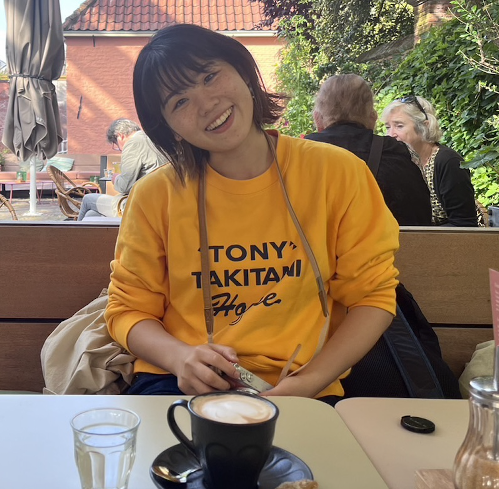

Momoko Masaki
I completed my undergraduate studies at Waseda University
Bachelor in School of International Liberal Arts
2018-2019 exchange program at The University of Edinburgh
| Prior Knowledge | No experience in coding/programming Basic Skills in Words, PowerPoint, Adobe InDesign, Illustrator |
| Expectations | Hope to learn the structure of digital texutualization and how human can strategically use it. I am especially interested in how to digitize both verbal and non-verbal contents of the books and how we could animate them, or how they evoke sensations to readers on digital devices. |
I am interested in digitization of children's books&picture books, and how it enables globalization of children's books world.
I love playing with cats, chatting with my flatmates, strolling the bookshops, and writing my bullet journal.
Always ambitious to find the best cheese in the Netherlands.
I used to read mostly in Japanese, and my favorite authors are Haruki Murakami, Yoko Tawada, Mieko Kawakami.
| Books (possibly) changed my view | Norwegian Wood(Haruki Murakami), The Emissary(Yoko Tawada), Breasts and Eggs(Mieko Kawakami), The Gifts of the body (Rebecca Brown), Hojoki (Chomei Kamono) |
| Movies | The Illusionist(Sylvain Chomet), Whisper of the Heart(Yoshifumi Kondō), The Worst Person in the World(Joachim Trier) |
I have been a Spotify addict for almost 7 years. Here is my Leiden Playlist.